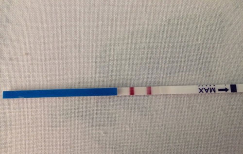
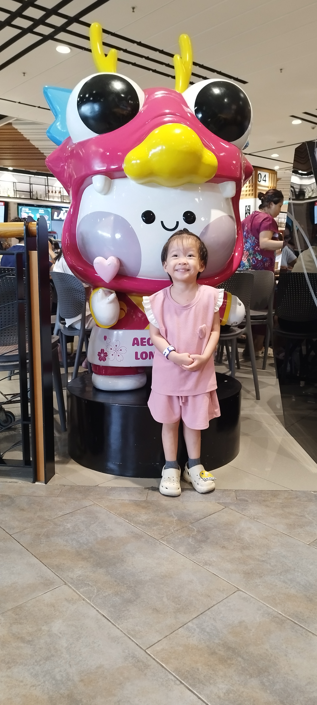
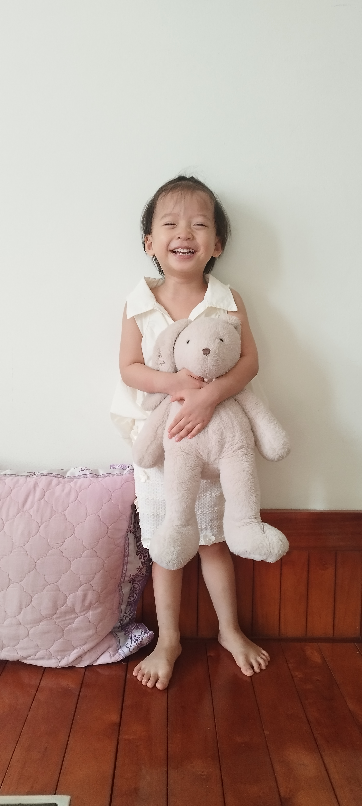
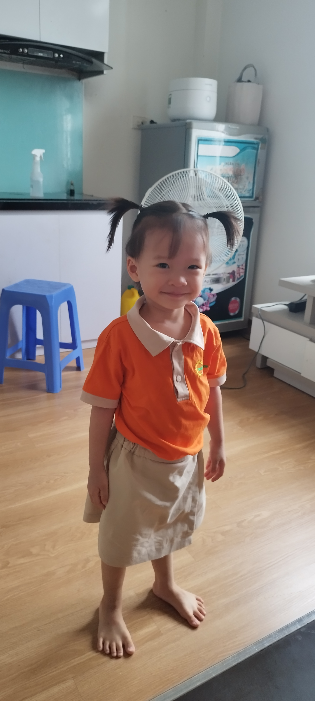
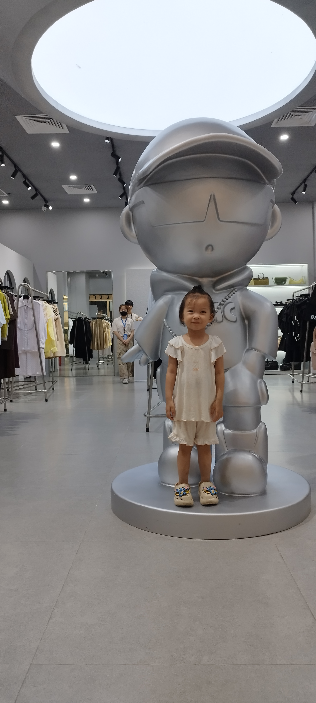
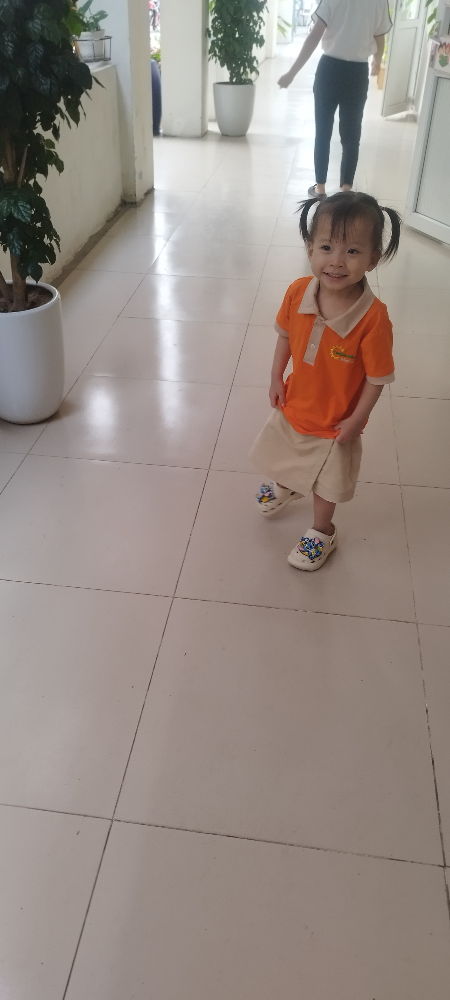

NHẬT KÝ GIA ĐÌNH
Hành trình của Dâu Tây
Từ hai vạch hồng đầu tiên đến những ngày con lớn khôn — câu chuyện của Dâu Tây và Nhà Mình.
Có những câu chuyện bắt đầu bằng một khoảnh khắc rất nhỏ. Với Nhà Mình, câu chuyện về Dâu Tây bắt đầu từ hai vạch hồng trên một que thử thai, rồi tiếp tục qua những hình ảnh siêu âm, ngày con chào đời và những tháng năm con lớn lên bên bố mẹ.
Ngày 14 tháng 02 năm 2023 — Hai vạch hồng đầu tiên
Ngày 14 tháng 2 năm 2023, bố mẹ bắt đầu thử que.
Đó là ngày mà một niềm vui thật lớn bắt đầu đến với Nhà Mình. Khi biết tin có em bé, cả bố và mẹ đều rất vui. Với bố, cảm giác sắp được làm bố là một niềm hạnh phúc đặc biệt. Từ giây phút ấy, trong câu chuyện của gia đình mình đã có thêm một nhân vật nhỏ bé — em bé mà bố mẹ sẽ gọi bằng cái tên thân thương: Dâu Tây.
Bố mẹ đã không chụp ảnh que thử thai vào ngày hôm đó. Nhưng may mắn là hình ảnh hai vạch hồng vẫn được lưu giữ, để hôm nay khi nhìn lại, bố mẹ có thể nhớ về một trong những dấu mốc đầu tiên của hành trình này.
Hai vạch nhỏ thôi, nhưng mở ra biết bao điều mới mẻ. Từ ngày ấy, gia đình mình bắt đầu mong chờ một cuộc gặp gỡ mà bố mẹ chưa biết chính xác sẽ mang đến những cảm xúc như thế nào.
Dâu Tây à, trước khi con có mặt trong vòng tay bố mẹ, con đã là một niềm vui lớn trong lòng cả nhà rồi.

Những hình ảnh đầu tiên của Dâu Tây
Sau ngày biết tin có con, bố mẹ có thêm những hình ảnh siêu âm của Dâu Tây.
Trong những bức ảnh ấy, con hiện lên qua màn hình siêu âm, với những góc nhìn khác nhau về em bé đang lớn lên trong bụng mẹ. Đó là những hình ảnh đặc biệt, bởi chúng lưu lại một giai đoạn mà con vẫn còn ở bên trong mẹ, còn bố mẹ thì đang chờ ngày được gặp con.
Nhìn lại những tấm hình siêu âm, bố mẹ có thể thấy hành trình của con đã được ghi dấu từ rất sớm. Từ hai vạch hồng trên que thử đến hình ảnh của con qua màn hình, niềm vui ngày đầu tiên dần có thêm những kỷ vật để lưu giữ.
Có những khoảnh khắc không cần một bức ảnh thật rõ nét hay một lời kể thật dài mới trở nên đáng nhớ. Đôi khi, chỉ cần nhìn lại một hình ảnh cũ, bố mẹ đã biết đó là một phần không thể thiếu trong câu chuyện của gia đình mình.
Những hình ảnh siêu âm ấy sẽ luôn có một vị trí riêng trong cuốn nhật ký của Dâu Tây — nơi lưu lại những dấu mốc đầu tiên trước ngày con chào đời.


Những tháng ngày chờ đón con
Từ ngày biết tin có Dâu Tây, hành trình của Nhà Mình bước sang một chương mới.
Con vẫn còn trong bụng mẹ, còn bố mẹ bắt đầu lưu giữ những dấu mốc đầu tiên của con qua những hình ảnh và ký ức. Quãng thời gian ấy là một phần quan trọng trong câu chuyện gia đình, dù không phải mọi khoảnh khắc đều được ghi lại bằng ảnh hay câu chữ.
Bây giờ, khi nhìn lại, bố mẹ muốn dành riêng những dòng này cho khoảng thời gian trước ngày con chào đời. Bởi hành trình của Dâu Tây không chỉ bắt đầu vào ngày 01 tháng 11 năm 2023. Hành trình ấy đã bắt đầu từ ngày bố mẹ biết tin có con, từ những hình ảnh siêu âm đầu tiên và từ những tháng ngày cả nhà cùng chờ đón một thành viên mới.
Những điều bố mẹ chưa kể hết hôm nay vẫn có thể được bổ sung vào cuốn nhật ký này sau này. Có thể là một bức ảnh cũ, một kỷ niệm bất chợt nhớ ra, hay một câu chuyện mà khi con lớn hơn, bố mẹ muốn kể lại cho con nghe.
Tất cả đều xứng đáng được lưu giữ, bởi đó là những ngày đầu tiên trong hành trình của Dâu Tây.
Ngày 01 tháng 11 năm 2023 — Dâu Tây chào đời
Ngày 01 tháng 11 năm 2023, Dâu Tây chào đời.
Ngày tháng ấy đánh dấu một cột mốc quan trọng trong câu chuyện của Nhà Mình. Từ em bé mà bố mẹ biết tin đang đến với gia đình vào tháng Hai, Dâu Tây đã có ngày sinh của riêng mình — ngày bắt đầu một hành trình mới bên ngoài bụng mẹ.
Nếu ngày 14 tháng 2 là dấu mốc bố mẹ biết tin có con, thì ngày 1 tháng 11 là dấu mốc Dâu Tây chính thức bước vào thế giới của gia đình mình.
Bố mẹ muốn lưu giữ ngày này trong cuốn nhật ký không chỉ như một ngày sinh, mà còn như một dấu mốc nối liền những tháng ngày chờ đón với hành trình con lớn lên sau đó.
Những hình ảnh đầu tiên của con, những kỷ niệm trong ngày đặc biệt ấy và những câu chuyện quanh ngày con chào đời sẽ là những phần rất quý giá để bố mẹ bổ sung vào đây.


Từ em bé ngày nào đến Dâu Tây của hôm nay
Thời gian cứ thế đi qua. Em bé mà bố mẹ từng mong chờ ngày nào giờ đã gần 3 tuổi.
Nhìn lại hành trình từ ngày thử que đến hôm nay, bố mẹ nhận ra câu chuyện của Dâu Tây được tạo nên từ rất nhiều dấu mốc. Có những dấu mốc đã được lưu lại bằng hình ảnh, như que thử thai và những tấm hình siêu âm. Có những điều vẫn đang nằm trong ký ức, chờ một ngày được kể lại bằng những dòng chữ.
Bố mẹ muốn giữ lại câu chuyện này để sau này con có thể đọc, có thể nhìn lại những hình ảnh từ những ngày đầu tiên và biết rằng hành trình của mình đã được gia đình trân trọng như thế nào.
Cuốn nhật ký này sẽ không chỉ dừng lại ở ngày con chào đời. Nó sẽ còn tiếp tục được viết trong những năm tháng tiếp theo — khi con lớn thêm một chút, khi gia đình có thêm những chuyến đi, những trải nghiệm và những kỷ niệm mới.
Hôm nay, Dâu Tây đã gần 3 tuổi. Câu chuyện của con vẫn đang tiếp tục, và bố mẹ vẫn muốn lưu giữ từng chặng đường bằng cách riêng của Nhà Mình.






Gửi Dâu Tây của bố mẹ
Dâu Tây yêu quý,
Ngày 14 tháng 2 năm 2023, bố mẹ bắt đầu thử que và biết tin gia đình mình sắp có con. Cả bố và mẹ đều rất vui. Ngày ấy không có một bức ảnh que thử thai được chụp lại, nhưng hai vạch hồng vẫn trở thành một kỷ vật mà bố mẹ muốn giữ trong câu chuyện của gia đình.
Rồi bố mẹ có những hình ảnh siêu âm đầu tiên của con. Những hình ảnh ấy nhắc bố mẹ nhớ về quãng thời gian con còn trong bụng mẹ, khi cả nhà đang chờ đón ngày được gặp con.
Ngày 1 tháng 11 năm 2023, con chào đời. Và hôm nay, con đã gần 3 tuổi.
Bố mẹ viết lại những dòng này để con biết rằng câu chuyện của con đã được bắt đầu từ rất lâu trước ngày con có thể tự mình đọc những dòng chữ này. Từ những dấu mốc đầu tiên, bố mẹ muốn lưu giữ lại hành trình của con bằng những hình ảnh, những kỷ niệm và những câu chuyện của Nhà Mình.
Sau này, khi con lớn hơn, hy vọng con sẽ thích thú khi nhìn lại những bức ảnh cũ, đọc về ngày bố mẹ biết tin có con và khám phá từng trang nhật ký của chính mình.
Bố mẹ sẽ tiếp tục viết. Câu chuyện của con vẫn còn rất dài, và phía trước Nhà Mình vẫn còn nhiều ngày tháng để cùng nhau đi qua.
Thương con thật nhiều, Dâu Tây.
Bố mẹ — Nhà Mình Journal